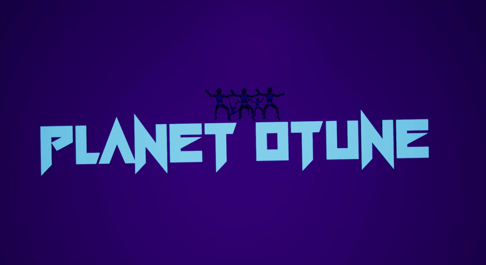

Planet Otune
Unreal Engine 4 Group Project
 FULL GAMEPLAY VIDEOMade as part of a 4-person group for my Genre Swap project of my Games Design course at South Staffordshire College. This game was made using Unreal Engine 4.
As part of my 4 person group, I had worked with 2 artists and a music producer. I was the designer of this project. As part of my role, I did all the in-engine development, systems designs and mechanic creation.
Planet Otune is a single-player first person shooter game about a soldier being sent down to eradicate dangerous aliens. The game features cutscene sequences made using timelines, camera rig rails and widget elements for dialogue.